Lab 16: Hybrid Entra Join and Intune Enrolment
Converted an existing domain-joined Windows client into a hybrid Microsoft Entra joined, Intune-managed endpoint by removing a stale workplace registration, configuring Hybrid Join, applying an auto-enrolment GPO and validating the final device state.
Overview
In this lab, I extended the endpoint management pilot from the cloud-native device in Lab 15 to an existing on-premises domain-joined Windows client. CL1 represented a traditional corporate workstation already joined to corp.nietz.co.uk.
Before configuring Hybrid Join, I found and removed an old Microsoft Entra registered workplace state for CL1. I then moved the on-premises computer object into the Hybrid Pilot device OU, configured the Hybrid Join service connection point through Microsoft Entra Connect, and used Group Policy to trigger automatic Intune enrolment.
Objective
The objective was to prove that an existing on-premises domain-joined Windows device can be brought under Microsoft Entra ID and Microsoft Intune management without rebuilding it as a cloud-native device.
Environment
| Component | Value |
|---|---|
| Company | Nietz Ltd |
| On-premises AD domain | corp.nietz.co.uk |
| Microsoft 365 / Entra domain | nietz.co.uk |
| Domain controller | DC1 |
| Entra Connect server | SYNC1 |
| Client device | CL1 |
| Assigned user | Emily Wilson |
| Assigned user UPN | e.wilson@nietz.co.uk |
| Pilot device OU | OU=Devices,OU=Hybrid Pilot,OU=Nietz Ltd |
| Intune pilot group | GRP_Intune_Pilot |
| Intune auto-enrolment GPO | GPO_Intune_Auto_Enrollment_Hybrid_Pilot |
| Final device join type | Microsoft Entra hybrid joined |
| Management platform | Microsoft Intune |
| Previous lab dependency | Lab 15: Cloud-Native Entra Join and Intune Auto-Enrolment |
| Next lab dependency | Lab 17: Device Compliance Policy Pilot |
Configuration
1. CL1 Starting State Reviewed
I signed in to CL1 as Emily Wilson and reviewed the local device registration state using dsregcmd /status.
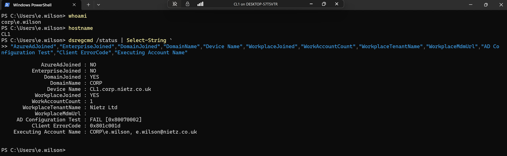
2. Existing Entra Registered Record Identified
I searched Microsoft Entra ID for CL1 and confirmed that the device existed only as a Microsoft Entra registered device owned by Emily Wilson, with no Intune management.
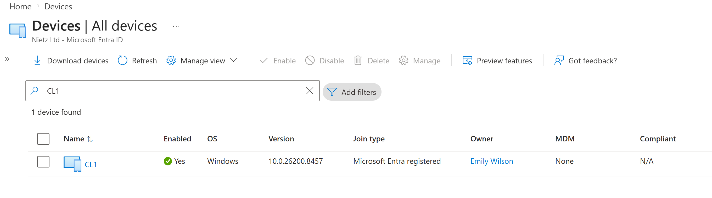
3. Workplace Registration Removed from CL1
I removed the work or school account registration from CL1 and rechecked the local device state.
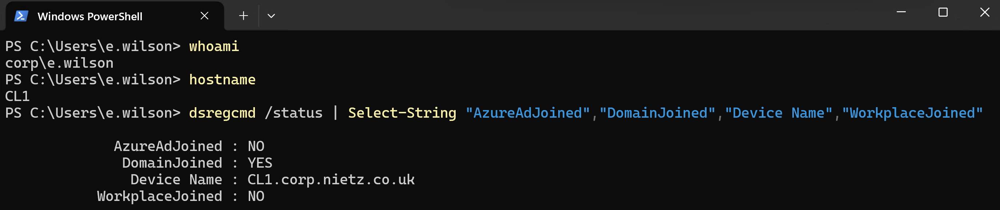
4. Stale Entra Device Record Deleted
I deleted the stale Microsoft Entra registered CL1 device record and confirmed that CL1 no longer appeared in the Entra device search.
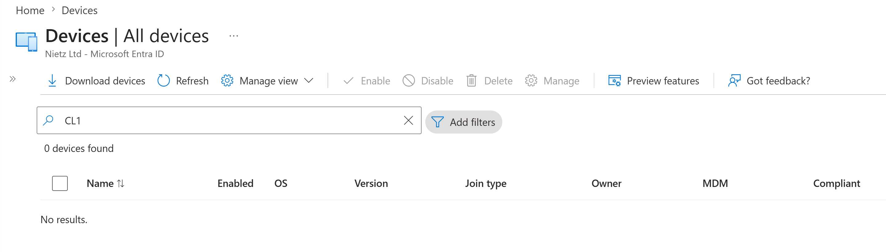
5. CL1 Computer Object Confirmed in Active Directory
I confirmed that CL1 still existed as an on-premises Active Directory computer object before moving it into the pilot device OU.
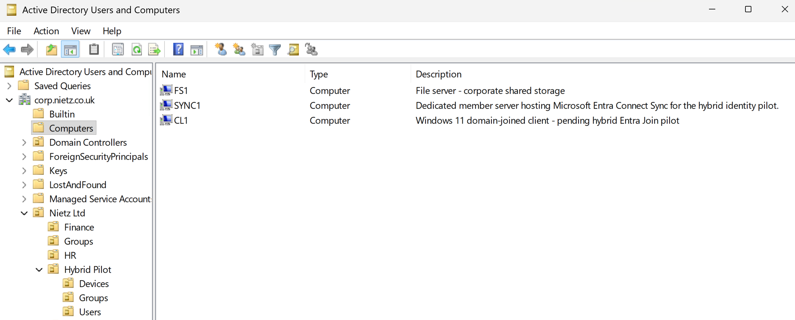
6. CL1 Moved to the Hybrid Pilot Devices OU
I moved the CL1 computer object into the dedicated Hybrid Pilot Devices OU.
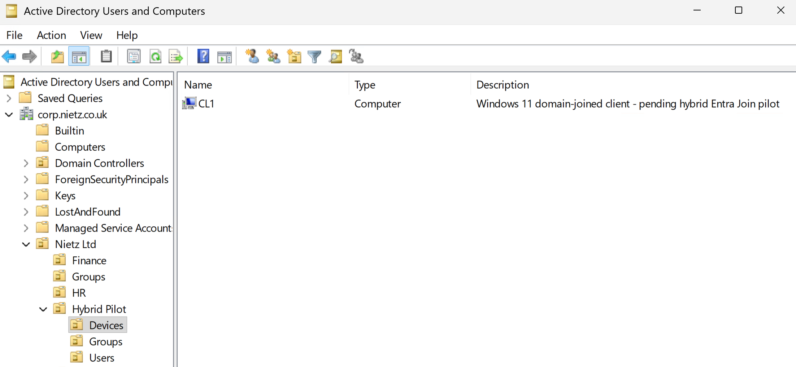
7. Hybrid Join Device Type Selected
On SYNC1, I used Microsoft Entra Connect to configure Hybrid Microsoft Entra ID Join for Windows 10 or later domain-joined devices.
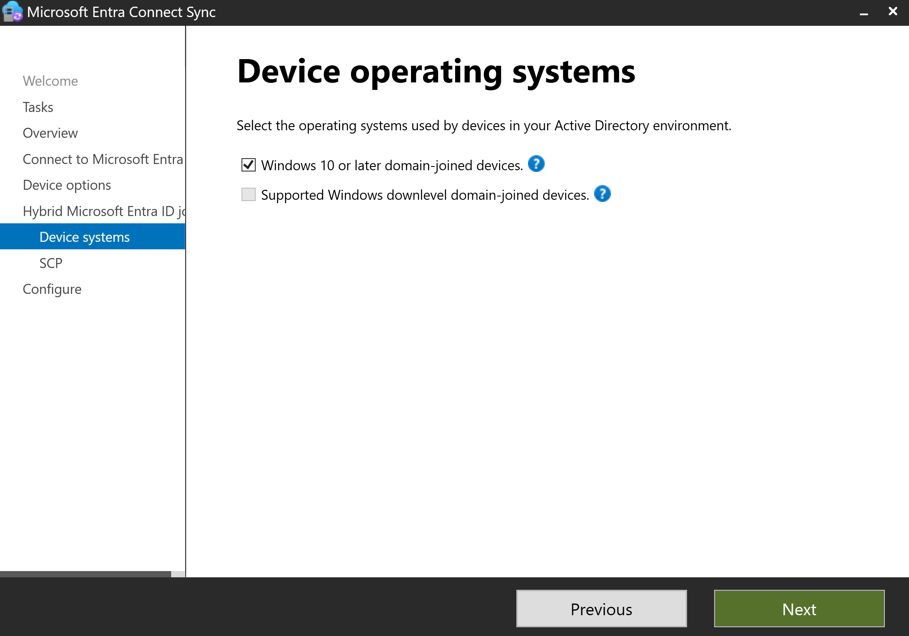
8. Hybrid Join SCP Configured
I configured the service connection point for the corp.nietz.co.uk forest using the on-premises enterprise administrator credential.
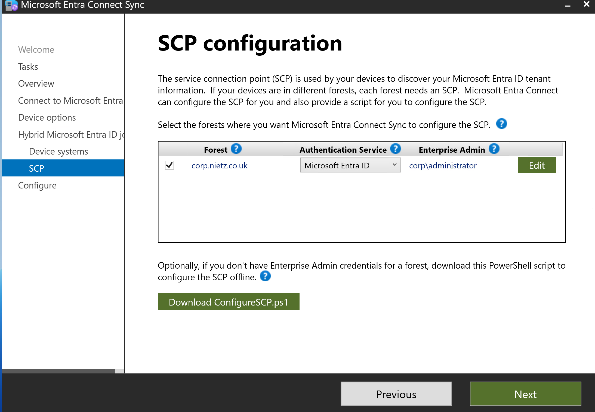
9. Hybrid Join Configuration Completed
I completed the Microsoft Entra Connect wizard and confirmed that the Hybrid Join configuration task completed successfully.
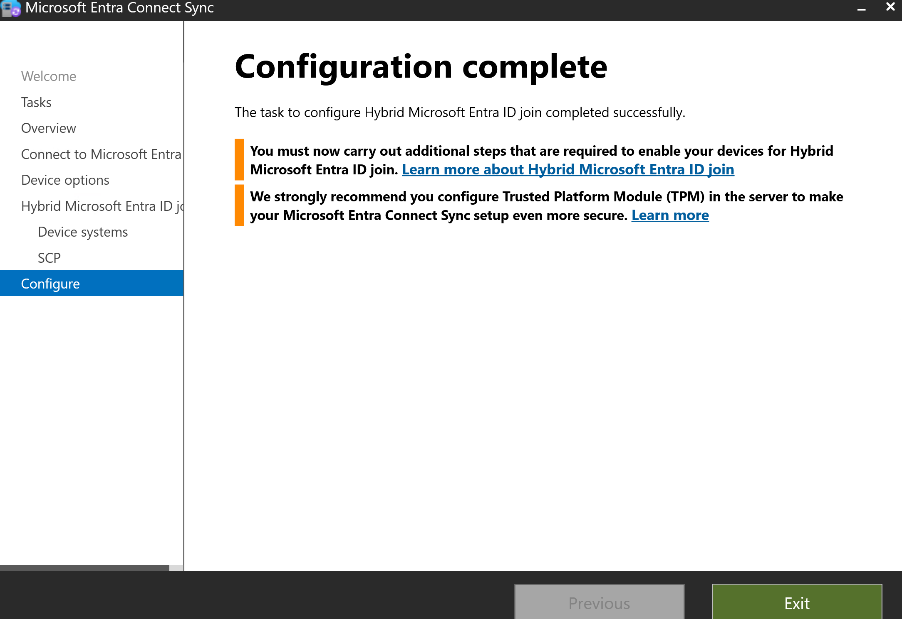
10. AD Connect Delta Sync Completed
I ran a delta synchronization from SYNC1 after configuring Hybrid Join.
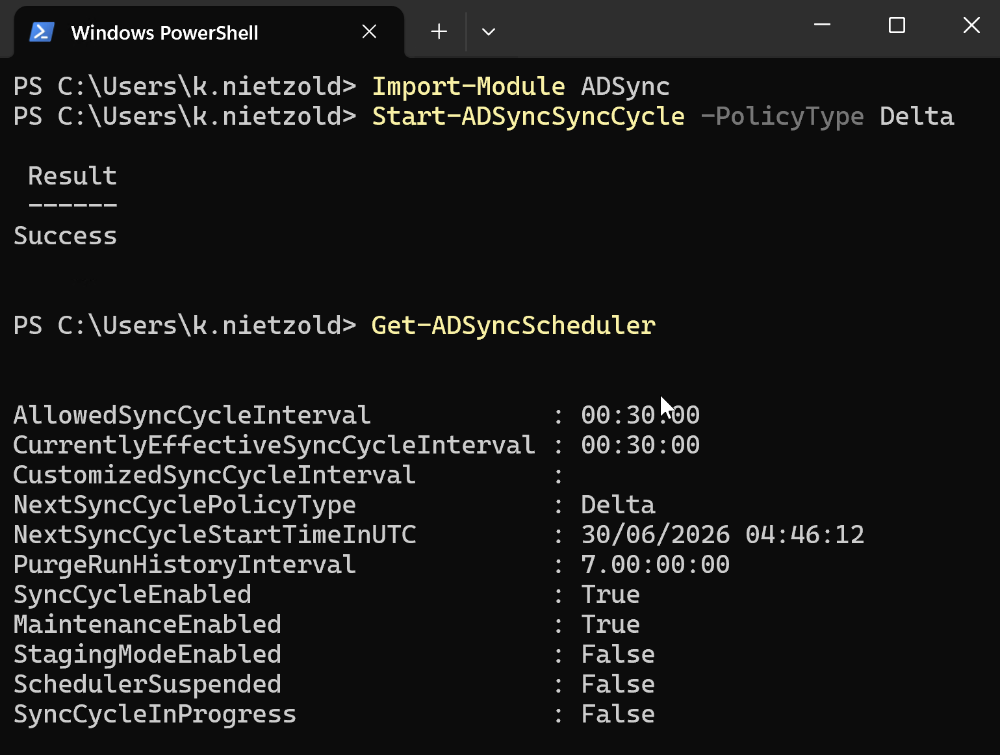
11. CL1 Hybrid Join Confirmed Locally
I checked CL1 again with dsregcmd /status and confirmed that it was both domain joined and Microsoft Entra joined.
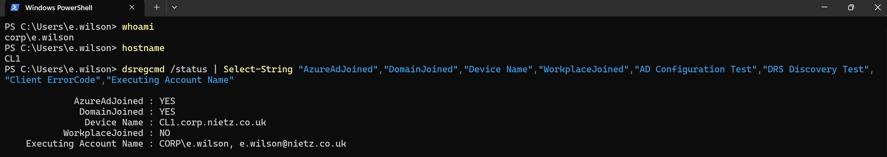
AzureAdJoined : YES and DomainJoined : YES.12. Entra Hybrid Joined Device Record Confirmed
I searched Microsoft Entra ID and confirmed that CL1 now appeared as a Microsoft Entra hybrid joined device.
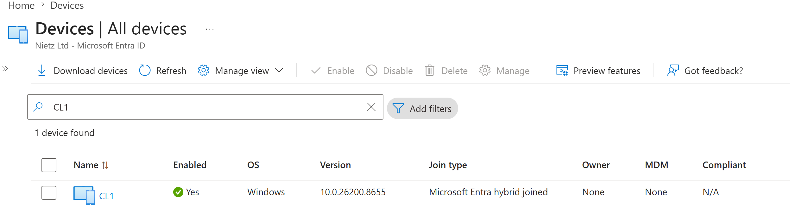
13. Emily Wilson Confirmed in Intune Pilot Group
I confirmed that Emily Wilson was a member of GRP_Intune_Pilot, the group used for Intune automatic enrolment scope.
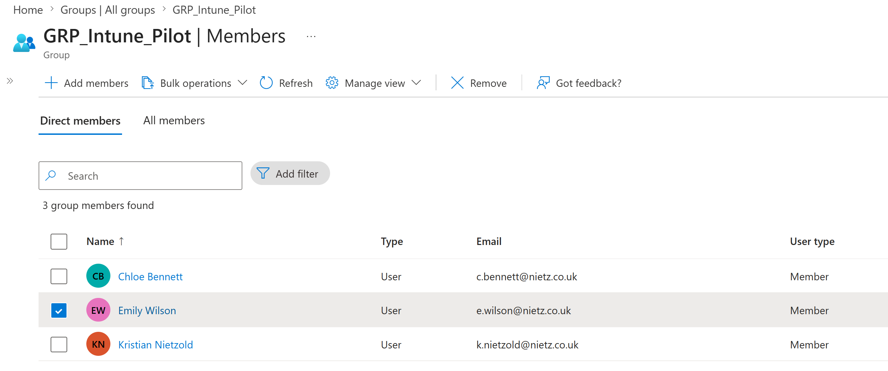
14. Emily Wilson Licence Confirmed
I confirmed that Emily Wilson had Microsoft 365 Business Premium assigned.
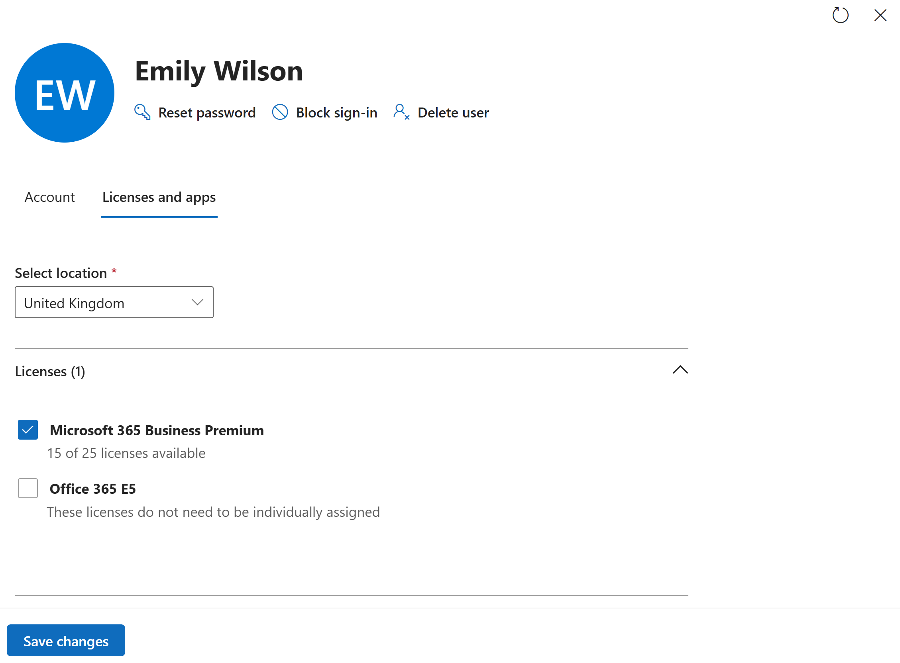
15. Intune Auto-Enrolment GPO Configured
I configured a Group Policy setting to enable automatic MDM enrolment using the default Microsoft Entra credentials.
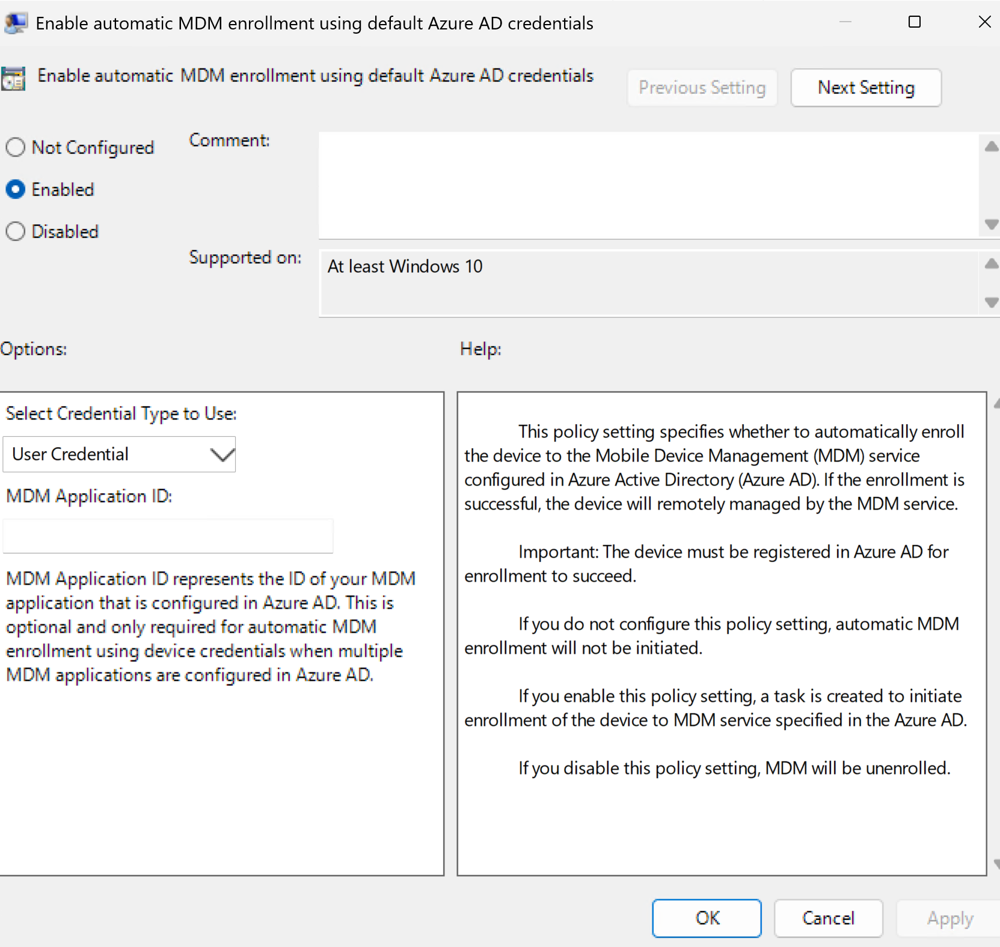
16. Intune Auto-Enrolment GPO Linked
I linked GPO_Intune_Auto_Enrollment_Hybrid_Pilot to the Hybrid Pilot Devices OU where CL1 was located.
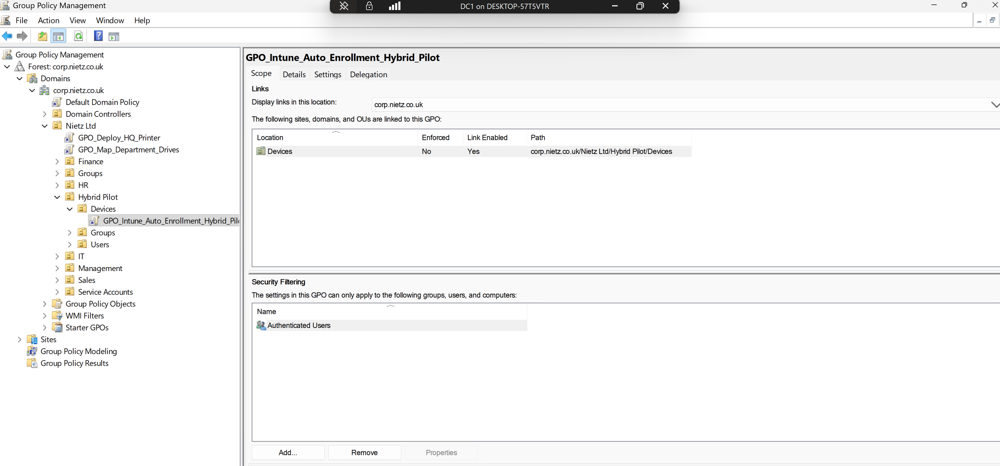
17. CL1 Group Policy Application Validated
I updated Group Policy on CL1 and confirmed that the Intune auto-enrolment GPO applied to the computer object.
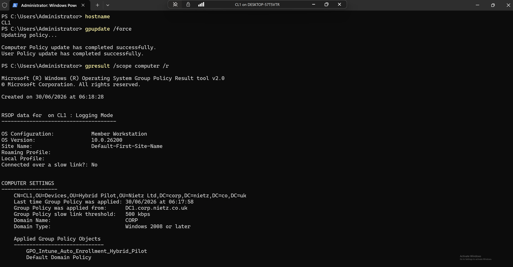
18. CL1 MDM Enrolment State Confirmed Locally
After restart and user sign-in, I checked dsregcmd /status and confirmed that CL1 had populated Intune MDM URLs and an Azure AD PRT.
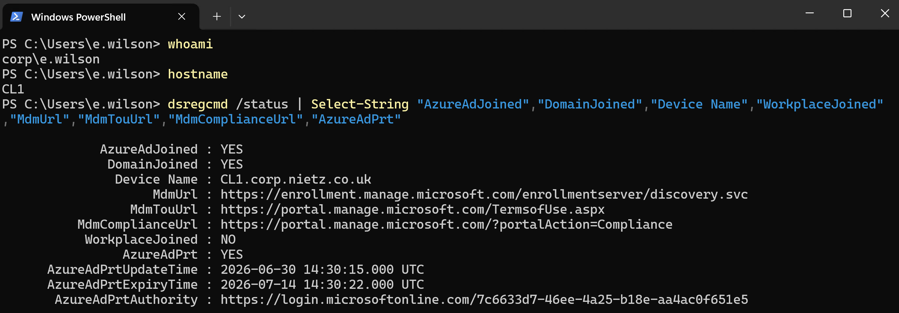
19. CL1 Confirmed in Intune Windows Devices
I reviewed the Intune Windows devices list and confirmed that CL1 was managed by Intune, corporate owned, compliant, assigned to Emily Wilson and hybrid joined.
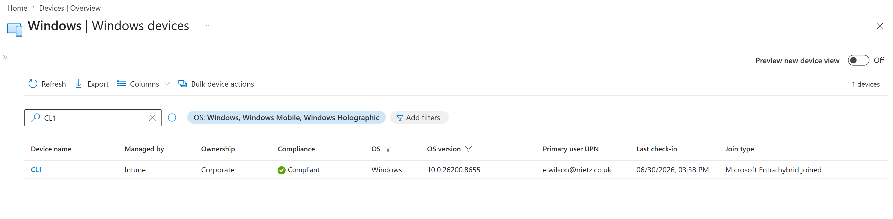
20. CL1 Intune Device Overview Confirmed
I opened the CL1 Intune device overview and confirmed the device badges, primary user, Intune device name, manufacturer, operating system and last check-in details.
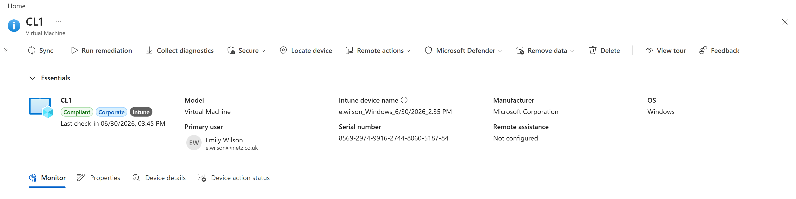
21. Entra Device Record Updated with Intune Management
I returned to Microsoft Entra ID and confirmed that the CL1 device record now showed Emily Wilson as the owner, Microsoft Intune as the MDM provider and a compliant state.
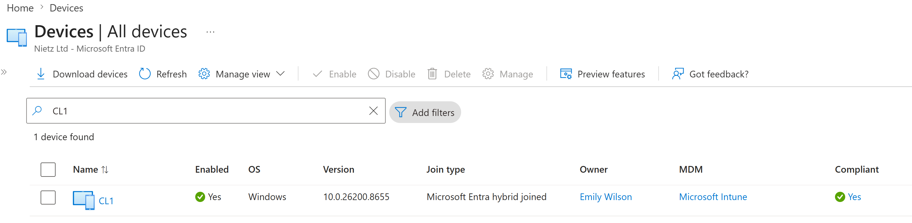
Validation
The lab was validated when CL1 showed AzureAdJoined : YES and DomainJoined : YES locally, Microsoft Entra ID showed the device as Microsoft Entra hybrid joined, the Intune automatic enrolment GPO applied to the CL1 computer object, dsregcmd showed populated MDM URLs and AzureAdPrt : YES, and Intune showed CL1 as managed, corporate owned, compliant and assigned to Emily Wilson.
Custom Windows compliance policy design was intentionally handled in Lab 17 so the Hybrid Join and enrolment evidence remained separate from the compliance-policy rollout. The Entra Connect TPM hardening recommendation for SYNC1 was also noted for a later server hardening task.
Key Technical Outcomes
This lab demonstrated stale device registration cleanup, controlled Hybrid Entra Join rollout, SCP configuration through Entra Connect, AD Connect delta sync validation, OU-based Group Policy targeting, automatic MDM enrolment, Azure AD PRT validation and tenant-side Entra and Intune verification.
The final result is that Nietz Ltd now has two endpoint baselines: CL2 from Lab 15 as a cloud-native Microsoft Entra joined device, and CL1 as an existing domain-joined device brought under Microsoft Entra ID and Intune management.
Summary
- I identified and removed the stale CL1 workplace registration and old Entra registered device record.
- I moved CL1 into the dedicated Hybrid Pilot Devices OU.
- I configured Hybrid Microsoft Entra ID Join through Microsoft Entra Connect.
- I ran an AD Connect delta sync after configuring the service connection point.
- I confirmed CL1 became both domain joined and Microsoft Entra joined.
- I confirmed Emily Wilson was licensed and in the Intune pilot group.
- I configured and applied a Group Policy for automatic MDM enrolment.
- I confirmed CL1 enrolled into Intune as a corporate, compliant, hybrid joined Windows device.